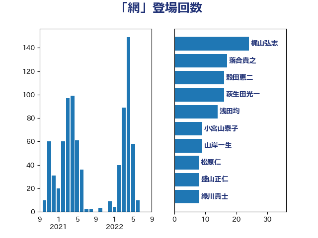

単語「網」

| 梶山弘志 | 自由民主党 | 24 回 |
| 落合貴之 | 立憲民主党 | 17 回 |
| 穀田恵二 | 日本共産党 | 16 回 |
| 萩生田光一 | 自由民主党 | 16 回 |
| 浅田均 | 日本維新の会 | 14 回 |
| 小宮山泰子 | 立憲民主党 | 9 回 |
| 山岸一生 | 立憲民主党 | 9 回 |
| 松原仁 | 立憲民主党 | 8 回 |
| 盛山正仁 | 自由民主党 | 8 回 |
| 緑川貴士 | 立憲民主党 | 8 回 |
| 青木愛 | 立憲民主党 | 8 回 |
| 大塚耕平 | 国民民主党 | 7 回 |
| 田村貴昭 | 日本共産党 | 7 回 |
| 塩田博昭 | 公明党 | 6 回 |
| 小林鷹之 | 自由民主党 | 6 回 |
| 平山佐知子 | 無所属 | 6 回 |
| あかま二郎 | 自由民主党 | 5 回 |
| 伊波洋一 | 無所属 | 5 回 |
| 吉田とも代 | 日本維新の会 | 5 回 |
| 城井崇 | 立憲民主党 | 5 回 |
| 室井邦彦 | 日本維新の会 | 5 回 |
| 小泉進次郎 | 自由民主党 | 5 回 |
| 山口壯 | 自由民主党 | 5 回 |
| 平沢勝栄 | 自由民主党 | 5 回 |
| 枝野幸男 | 立憲民主党 | 5 回 |
| 浦野靖人 | 日本維新の会 | 5 回 |
| 田中健 | 国民民主党 | 5 回 |
| 菅義偉 | 自由民主党 | 5 回 |
| 西村康稔 | 自由民主党 | 5 回 |
| 鈴木俊一 | 自由民主党 | 5 回 |
| 鈴木敦 | 国民民主党 | 5 回 |
| 長坂康正 | 自由民主党 | 5 回 |
| 宮口治子 | 立憲民主党 | 4 回 |
| 小熊慎司 | 立憲民主党 | 4 回 |
| 後藤祐一 | 立憲民主党 | 4 回 |
| 徳永エリ | 立憲民主党 | 4 回 |
| 榛葉賀津也 | 国民民主党 | 4 回 |
| 稲津久 | 公明党 | 4 回 |
| 篠原豪 | 立憲民主党 | 4 回 |
| 菅直人 | 立憲民主党 | 4 回 |
| 葉梨康弘 | 自由民主党 | 4 回 |
| 赤羽一嘉 | 公明党 | 4 回 |
| 階猛 | 立憲民主党 | 4 回 |
| 青柳仁士 | 日本維新の会 | 4 回 |
| 高木かおり | 日本維新の会 | 4 回 |
| 高橋千鶴子 | 日本共産党 | 4 回 |
| 麻生太郎 | 自由民主党 | 4 回 |
| こやり隆史 | 自由民主党 | 3 回 |
| 伊藤孝恵 | 国民民主党 | 3 回 |
| 古川元久 | 国民民主党 | 3 回 |
| 國重徹 | 公明党 | 3 回 |
| 奥下剛光 | 日本維新の会 | 3 回 |
| 守島正 | 日本維新の会 | 3 回 |
| 宗清皇一 | 自由民主党 | 3 回 |
| 宮本岳志 | 日本共産党 | 3 回 |
| 寺田静 | 無所属 | 3 回 |
| 山下芳生 | 日本共産党 | 3 回 |
| 岩本剛人 | 自由民主党 | 3 回 |
| 工藤彰三 | 自由民主党 | 3 回 |
| 柴田巧 | 日本維新の会 | 3 回 |
| 柿沢未途 | 無所属 | 3 回 |
| 河野義博 | 公明党 | 3 回 |
| 浜口誠 | 国民民主党 | 3 回 |
| 牧野たかお | 自由民主党 | 3 回 |
| 田嶋要 | 立憲民主党 | 3 回 |
| 田村憲久 | 自由民主党 | 3 回 |
| 福島伸享 | 無所属 | 3 回 |
| 笠井亮 | 日本共産党 | 3 回 |
| 篠原孝 | 立憲民主党 | 3 回 |
| 赤嶺政賢 | 日本共産党 | 3 回 |
| 足立康史 | 日本維新の会 | 3 回 |
| 近藤和也 | 立憲民主党 | 3 回 |
| 野上浩太郎 | 自由民主党 | 3 回 |
| 長谷川岳 | 自由民主党 | 3 回 |
| 阿部司 | 日本維新の会 | 3 回 |
| 音喜多駿 | 日本維新の会 | 3 回 |
| 三木圭恵 | 日本維新の会 | 2 回 |
| 上田英俊 | 自由民主党 | 2 回 |
| 伊藤俊輔 | 立憲民主党 | 2 回 |
| 伊藤岳 | 日本共産党 | 2 回 |
| 佐藤茂樹 | 公明党 | 2 回 |
| 土田慎 | 自由民主党 | 2 回 |
| 大串博志 | 立憲民主党 | 2 回 |
| 大岡敏孝 | 自由民主党 | 2 回 |
| 大島敦 | 立憲民主党 | 2 回 |
| 大西健介 | 立憲民主党 | 2 回 |
| 奥野総一郎 | 立憲民主党 | 2 回 |
| 安江伸夫 | 公明党 | 2 回 |
| 岸田文雄 | 自由民主党 | 2 回 |
| 斉藤鉄夫 | 公明党 | 2 回 |
| 横沢高徳 | 立憲民主党 | 2 回 |
| 武部新 | 自由民主党 | 2 回 |
| 池田佳隆 | 自由民主党 | 2 回 |
| 浅野哲 | 国民民主党 | 2 回 |
| 清水貴之 | 日本維新の会 | 2 回 |
| 熊田裕通 | 自由民主党 | 2 回 |
| 石橋通宏 | 立憲民主党 | 2 回 |
| 稲田朋美 | 自由民主党 | 2 回 |
| 舟山康江 | 国民民主党 | 2 回 |
| 西野太亮 | 自由民主党 | 2 回 |
| 道下大樹 | 立憲民主党 | 2 回 |
| 野田国義 | 立憲民主党 | 2 回 |
| 金子恭之 | 自由民主党 | 2 回 |
| 青山大人 | 立憲民主党 | 2 回 |
| たがや亮 | れいわ新選組 | 1 回 |
| 世耕弘成 | 自由民主党 | 1 回 |
| 中山展宏 | 自由民主党 | 1 回 |
| 中川郁子 | 自由民主党 | 1 回 |
| 中根一幸 | 自由民主党 | 1 回 |
| 中西祐介 | 自由民主党 | 1 回 |
| 中谷真一 | 自由民主党 | 1 回 |
| 井上信治 | 自由民主党 | 1 回 |
| 井上哲士 | 日本共産党 | 1 回 |
| 井上英孝 | 日本維新の会 | 1 回 |
| 仁木博文 | 無所属 | 1 回 |
| 伊東良孝 | 自由民主党 | 1 回 |
| 伊藤孝江 | 公明党 | 1 回 |
| 佐藤啓 | 自由民主党 | 1 回 |
| 務台俊介 | 自由民主党 | 1 回 |
| 勝俣孝明 | 自由民主党 | 1 回 |
| 北村経夫 | 自由民主党 | 1 回 |
| 北神圭朗 | 無所属 | 1 回 |
| 原口一博 | 立憲民主党 | 1 回 |
| 古賀之士 | 立憲民主党 | 1 回 |
| 吉川沙織 | 立憲民主党 | 1 回 |
| 吉良よし子 | 日本共産党 | 1 回 |
| 和田有一朗 | 日本維新の会 | 1 回 |
| 嘉田由紀子 | 無所属 | 1 回 |
| 塩崎彰久 | 自由民主党 | 1 回 |
| 大石あきこ | れいわ新選組 | 1 回 |
| 大野泰正 | 自由民主党 | 1 回 |
| 宮本徹 | 日本共産党 | 1 回 |
| 小沢雅仁 | 立憲民主党 | 1 回 |
| 小沼巧 | 立憲民主党 | 1 回 |
| 山口那津男 | 公明党 | 1 回 |
| 山添拓 | 日本共産党 | 1 回 |
| 岡本あき子 | 立憲民主党 | 1 回 |
| 岩田和親 | 自由民主党 | 1 回 |
| 岸信夫 | 自由民主党 | 1 回 |
| 川田龍平 | 立憲民主党 | 1 回 |
| 市村浩一郎 | 日本維新の会 | 1 回 |
| 平井卓也 | 自由民主党 | 1 回 |
| 庄子賢一 | 公明党 | 1 回 |
| 掘井健智 | 日本維新の会 | 1 回 |
| 斎藤洋明 | 自由民主党 | 1 回 |
| 新垣邦男 | 立憲民主党 | 1 回 |
| 日下正喜 | 公明党 | 1 回 |
| 末松義規 | 立憲民主党 | 1 回 |
| 本田顕子 | 自由民主党 | 1 回 |
| 東徹 | 日本維新の会 | 1 回 |
| 松沢成文 | 日本維新の会 | 1 回 |
| 梅村みずほ | 日本維新の会 | 1 回 |
| 梅村聡 | 日本維新の会 | 1 回 |
| 梅谷守 | 立憲民主党 | 1 回 |
| 森屋隆 | 立憲民主党 | 1 回 |
| 森山浩行 | 立憲民主党 | 1 回 |
| 櫻井周 | 立憲民主党 | 1 回 |
| 沢田良 | 日本維新の会 | 1 回 |
| 河西宏一 | 公明党 | 1 回 |
| 津島淳 | 自由民主党 | 1 回 |
| 浜田聡 | NHK党 | 1 回 |
| 浮島智子 | 公明党 | 1 回 |
| 熊谷裕人 | 立憲民主党 | 1 回 |
| 片山さつき | 自由民主党 | 1 回 |
| 片山大介 | 日本維新の会 | 1 回 |
| 玉木雄一郎 | 国民民主党 | 1 回 |
| 田名部匡代 | 立憲民主党 | 1 回 |
| 田村智子 | 日本共産党 | 1 回 |
| 田畑裕明 | 自由民主党 | 1 回 |
| 矢倉克夫 | 公明党 | 1 回 |
| 石井啓一 | 公明党 | 1 回 |
| 石原正敬 | 自由民主党 | 1 回 |
| 石川大我 | 立憲民主党 | 1 回 |
| 神谷裕 | 立憲民主党 | 1 回 |
| 福島みずほ | 社会民主党 | 1 回 |
| 福田昭夫 | 立憲民主党 | 1 回 |
| 福田達夫 | 自由民主党 | 1 回 |
| 秋本真利 | 自由民主党 | 1 回 |
| 稲富修二 | 立憲民主党 | 1 回 |
| 竹内真二 | 公明党 | 1 回 |
| 紙智子 | 日本共産党 | 1 回 |
| 美延映夫 | 日本維新の会 | 1 回 |
| 羽田次郎 | 立憲民主党 | 1 回 |
| 自見はなこ | 自由民主党 | 1 回 |
| 舞立昇治 | 自由民主党 | 1 回 |
| 若宮健嗣 | 自由民主党 | 1 回 |
| 茂木敏充 | 自由民主党 | 1 回 |
| 藤川政人 | 自由民主党 | 1 回 |
| 藤巻健太 | 日本維新の会 | 1 回 |
| 藤田文武 | 日本維新の会 | 1 回 |
| 西岡秀子 | 国民民主党 | 1 回 |
| 赤澤亮正 | 自由民主党 | 1 回 |
| 金村龍那 | 日本維新の会 | 1 回 |
| 鈴木隼人 | 自由民主党 | 1 回 |
| 長友慎治 | 国民民主党 | 1 回 |
| 阿部弘樹 | 日本維新の会 | 1 回 |
| 額賀福志郎 | 自由民主党 | 1 回 |
| 高木啓 | 自由民主党 | 1 回 |
| 高階恵美子 | 自由民主党 | 1 回 |